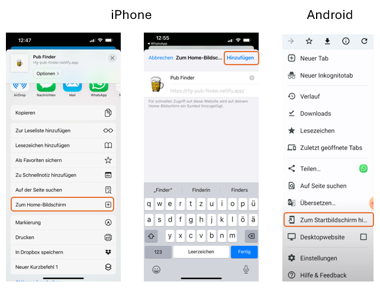
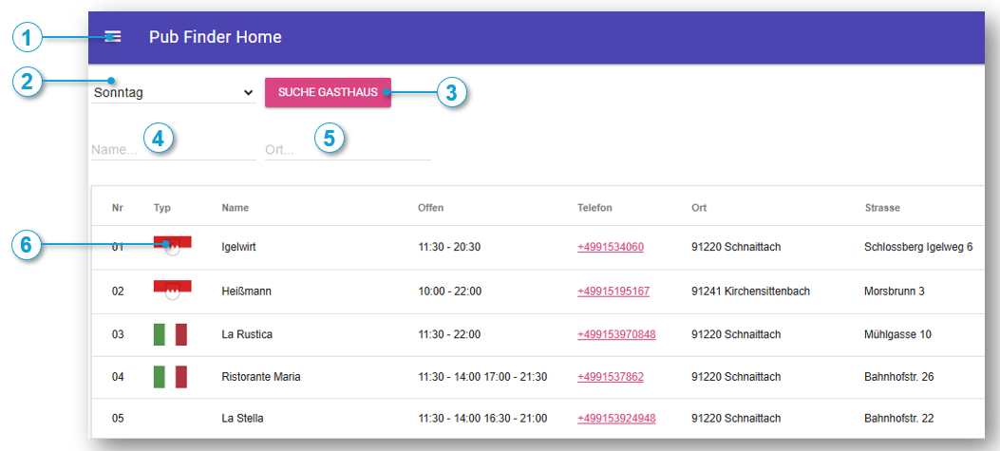
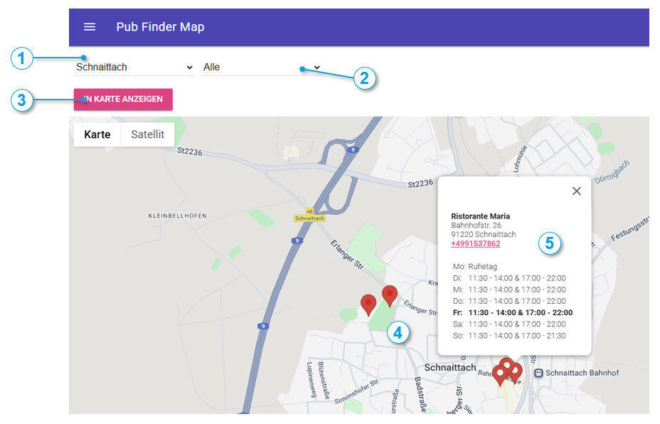
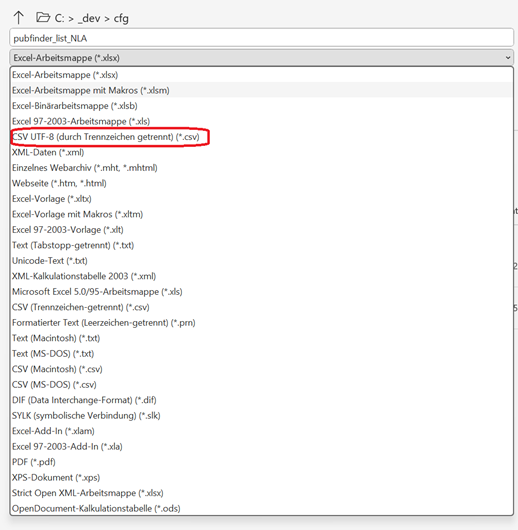
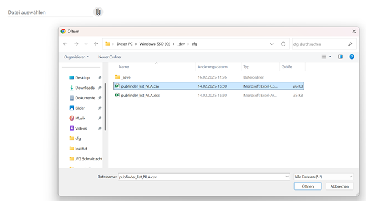
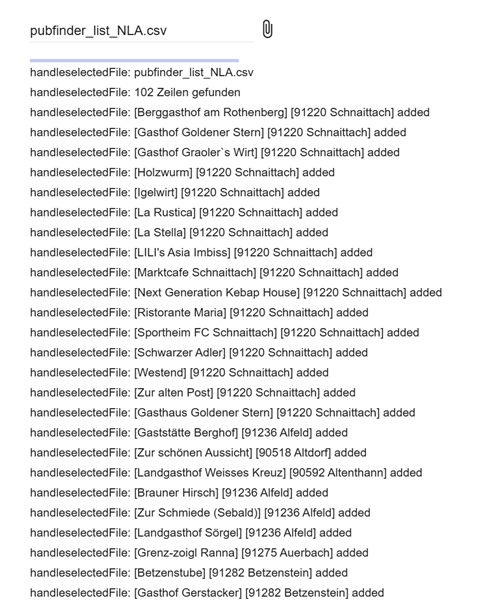
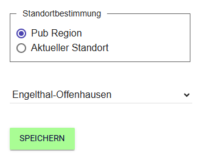
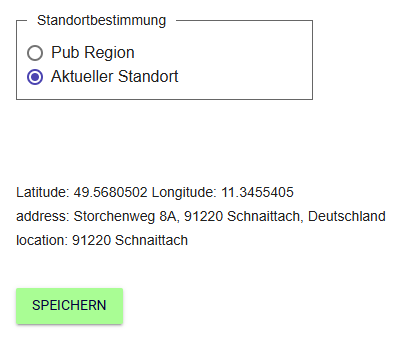

Allgemein
Die Pubfinder App (Kneipensuchmaschine) ist das erste Projekt der Retired Fun Programming Group (RFPG).
In dieser Gruppe befinden sich Leute, die Spaß am Programmieren haben und
sich gleichzeitig auch noch einigermaßen körperlich fit halten möchten.
Zu der Gruppe gehören:
- die Kreuzfahrer
- die Wanderer
- die Skatrunde
- der Lehrersport
- die Strandkorbchiller
- das Institut
- die Tyrachs
Zur Belohnung nach einer Radtour oder Wanderung in unserer herrlichen fränkischen Gegend
darf natürlich eine Einkehr in ein Wirtshaus nicht fehlen. Die Anzahl der Wirtschaften wird
leider immer überschaubarer und die paar wenigen, die es noch gibt, haben nur noch zu bestimmten Zeiten offen.
Für die einfachere und schnellere Planung einer Radtour oder Wanderung ist die Pubfinder App entstanden.
Die Datenbasis ist eine Liste von ca. 100 Wirtschaften im Nürnberger Land und Umgebung.
Die Liste ist sicher nicht vollständig und die Angaben können veraltet sein.
Natürlich wird versucht die Liste aktuell zu halten und möglichst viele Wirtschaften werden
selbstverständlich von der Gruppe ständig geprüft.
Die App dient nur zu privaten Zwecken und wird nicht kommerziell genutzt.
Der pubfinder kann auch als shortcut auf dem Home Bildschirm hinzugefügt werden
Beim iPhone geht es über die "Weiterleiten" Funktion und beim Android über die 3 Punkte im rechten oberen Eck.
Im folgenden Bild sieht man die screenshots vom iPhone und Android.

Die Pubfinder App besteht aus den folgenden Hauptseiten:
Homepage
Auf der Homepage kann der Tag, an dem der Ausflug stattfinden soll, ausgewählt werden.Nachdem der Button „Suche Gasthaus“ betätigt wurde, werden alle Gasthäuser,
die an diesem Tag keinen Ruhetag haben in einer Tabelle angezeigt. In der Spalte „Offen“ sind dann die Öffnungszeiten im Detail zu sehen.
Um die Datenmenge einzuschränken, gibt es Filter für den Namen der Wirtschaft
oder den Ort in dessen Umgebung sich die Gasthäuser befinden.
Das Flaggensymbol ist mit einem Link zu einer Homepage oder Facebook Seite für die jeweilige Wirtschaft verknüpft.
Befindet sich in dem Typ Feld keine Flagge, dann gibt es keine Homepage.
Weiterhin ist auch die Telefon-Nr. mit einem Link hinterlegt, der mit der Telefon-App des jeweiligen Handys verknüpft ist.
Im folgenden Bild ist ein scrreenshot der Pubfinder Homepage zu sehen.

- Menue zur Navigation zwischen den Pubfinder Seiten
- Tagesauswahlliste
- Die Aktion verknüpft mit diesem Button füllt die Tabelle mit den Wirtschaften, die an dem ausgewählten Tag keinen Ruhetag haben
- Wirsthaus Namen-Filter
- Wirtshaus Ort-Filter
- Liste der gefunden Wirsthäuser
Back to top of page
Map
Das nächste Bild zeigt die Pubfinder Map Seite. Hier gibt es eine Auswahlliste mit den Ortschaften, für die ein Wirtshaus konfiguriert ist.
In der zweiten Liste werden die gefunden Wirtschaften der ausgewählten Region angezeigt.
Beim Aufblenden der Seite wird eine Google Maps Karte mit der Position von Schnaittach als default angezeigt.

- Auswahlliste Region
- Auswahlliste mit den gefundenen Wirtschaften
- Button zur Anzeige der Markierungen in der Karte
- Markierungssymbole mit der Position und dem Status der Wirtschaft
- Informations-Fenster mit der Adresse und den Öffnungszeiten der Wirtschaft
Es können auf der Karte alle oder eine spezielle Wirtschaft der Region durch die Betätigung des „in Karte anzeigen“ Buttons
anhand eines Markierungssymbol eingeblendet werden. Der Kreis in der Markierung hat zwei Farben mit folgender Bedeutung:
- rot: Wirtschaft ist geschlossen
- weiss: Wirtschaft ist offen
Klickt man auf das Markierungssymbol erhält man ein Fenster mit den folgenden Informationen:
- Name der Wirtschaft
- Adresse
- Telefon-Nr. mit Link zur Telefon-App
- Öffnungszeiten (der aktuelle Tag incl. Öffnungszeiten wird „fett“ dargestellt)
Import
In der neuen pubfinder Version ist es möglich, die Liste der Lokalitäten mit Hilfe
von Microsoft Excel zu pflegen und zu erweitern. Man kopiert eine vorhandene Zeile und
ändert die Daten für die neue Gastwirtschaft. Anschließend speichert man die Datei im csv Format.

Danach wechselt man auf die pubfinder import Seite und lädt die geänderte Datei, indem man auf das Büroklammer Symbol klickt
und die entsprechende Datei auswählt. Hat der import funktioniert, werden die Anzahl der importierten Zeilen und der
Name und Ort der importierten Wirtschaft angezeigt.


Außerdem ist es möglich die csv Liste aus der cloud über einen microservice zu laden. Dafür muss man nur auf den
"Import vom Server Button" klicken.
Back to top of page
Settings
Die settings page enthält Konfigurations Parameter für die pub finder App
Folgende Parameter stehen zur Verfügung:
- Standortbestimmung
Mit Hilfe der Standortbestimmung kann der Default Eintrag in der Auswahlliste der Regionen auf der map page gesetzt werden.
Bei der Option "Pub Region" kann man aus der geladenen Regionen Liste die entsprechende Region ausgewählt werden (siehe folgende Bild)

Bei der Option "Aktueller Standort" wird der Ort ermittelt, an dem man sich gerade befindet. Über die
Position wird die Adresse und die entsprechende Postleitzahl ermittelt. (siehe folgendes Bild)
Als Test wir die aktuelle Position ausgegeben. Beim Aufblenden der map page wird die aktuelle Position und PLZ erneut berechnet.

Damit die Parameter Einstellungen übernommen werden, muss der "Speichern" Button gedrückt werden.